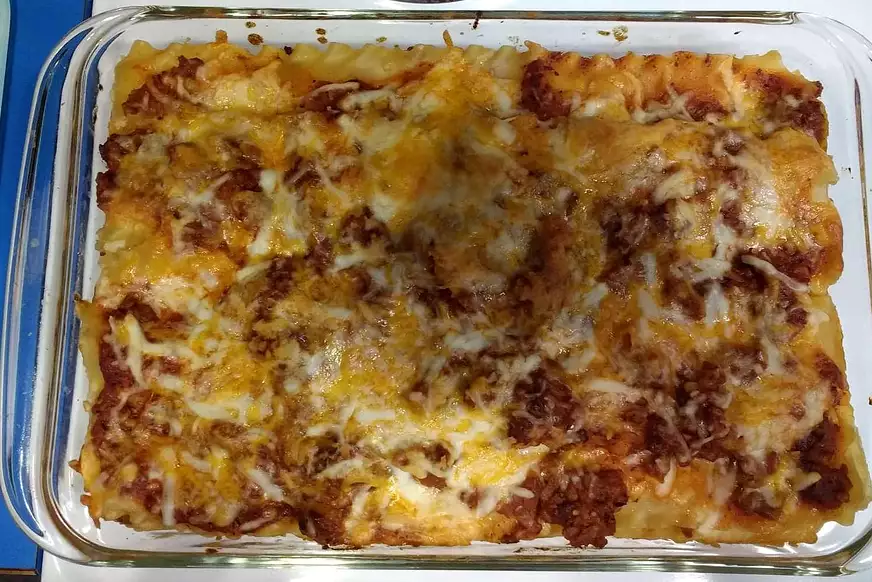

Brenda's recipe

Description
This is an easy to cook lasagna. It takes approximately 30 minutes tu prepare, and
another 30 minutes to cook. Making a total time of an 1 in total.
It is a fast to cook, and a inexpensive lasagna. Great to it with the family
ready to be enjoyed with a total of 8 servings.
Ingredients
- 1 package lasagna noodles
- 1 pound lean ground beef
- salt and pepper
- 1 jar spaghetti sauce
- 1 clove garlic,minced
- 1/2 pound shredded mozzarella cheese
- 1 pint ricotta cheese
Steps
- Bring a large pot of lightly salted water to a boil. Add pasta and cook
for 8 to 10 minutes or until al dente; drain.
- Preheat oven to 350 degrees F (175 degrees C). In a large skillet over
medium-high heat, brown beef and season with salt and pepper; drain.
Stir in spaghetti sauce and garlic and simmer 5 minutes.
- In a medium bowl, combine mozzarella, Cheddar and ricotta; stir well.
In 9x13 inch pan, alternate layers of noodles, meat mixture and cheese
mixture until pan is filled.
- Bake in preheated oven for 30 minutes, or until cheese is melted and bubbly.